中国民族语文翻译局成立60周年座谈会在京召开
来源：国家民委官方微信
12月11日，“中国民族语文翻译局成立60周年座谈会”在北京召开。全国人大常委会副委员长向巴平措，全国政协副主席、国家民委主任王正伟等出席座谈会，并参观了中国民族语文翻译局成立60周年展览。
王正伟高度评价了中国民族语文翻译局60年来所取得的巨大成绩和作出的突出贡献。他说，中国民族语文翻译局是在老一辈革命家的亲切关怀下成立的，周恩来同志亲自批准、习仲勋同志亲自批示。 60年来，党和国家对翻译局的工作给予了高度评价，中央领导同志多次作出重要指示。党的十八大以来，习近平总书记等中央领导同志对全国“两会”的民族语文翻译工作多次批示，予以充分肯定。
王正伟指出，中国民族语文翻译局是国家民族语文翻译事业的“国家队”，职责重要，是党和国家与少数民族群众之间的重要桥梁，是助推少数民族文化繁荣发展、走向现代化的重要平台；60年来，民族语文翻译局圆满完成了党和国家交办的各项重大任务，把中央最新精神原汁原味地送到少数民族身边，贡献重大；中国民族语文翻译局拥有一支政治素质强、业务水平高的多民族、多语种的国家级翻译队伍，人才荟萃，人才济济，是人才重地。王正伟强调，实践证明，中央设立民族语文翻译局的决策是完全正确的，民族语文翻译局的各项工作是卓有成效的，民族语文翻译局的队伍是值得党和人民信赖的。
王正伟对新形势下民族语文翻译局的未来发展提出了5点希望，第一，牢记光荣使命，当好中央精神的宣传者；第二，提高质量效益，做好民族团结进步事业的促进者；第三，推进改革创新，做基本公共文化服务均等化的推动者；第四，服务国家战略，争做最美中国声音的传播者；第五，加强队伍建设，做“三个特别”好干部标准的实践者。
中央统战部、中央文献研究室、全国人大内务司法委员会等有关部门的代表参加了会议。
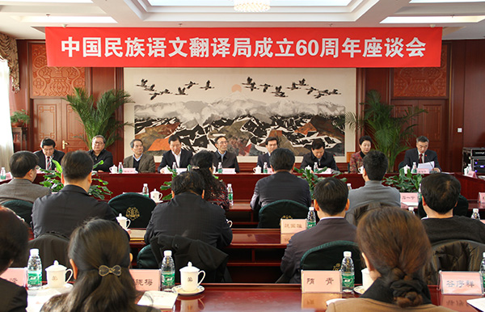
12月11日，“中国民族语文翻译局成立60周年座谈会”在北京召开。图为会议现场。
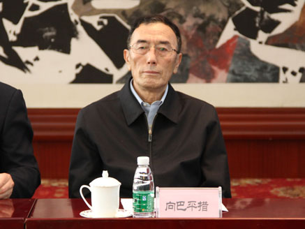
全国人大常委会副委员长向巴平措出席座谈会。
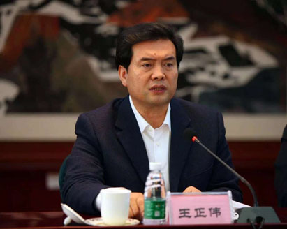
全国政协副主席、国家民委主任王正伟出席座谈会并发表重要讲话。
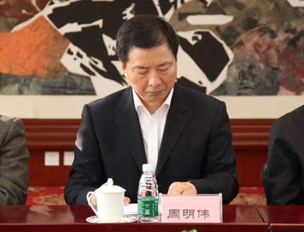
中国外文出版发行事业局局长周明伟出席座谈会。
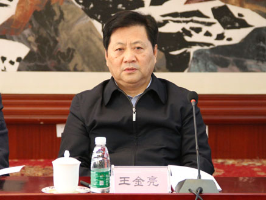
全国人大内务司法委员会委员王金亮出席座谈会并发表讲话。
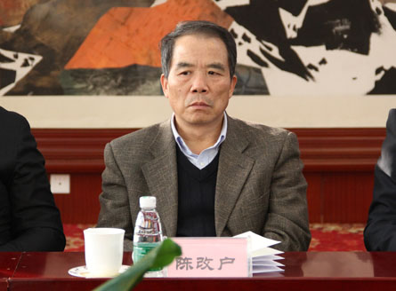
国家民委副主任陈改户出席座谈会。
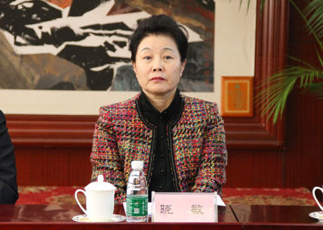
全国政协民族和宗教委员会副主任晓敏出席座谈会。
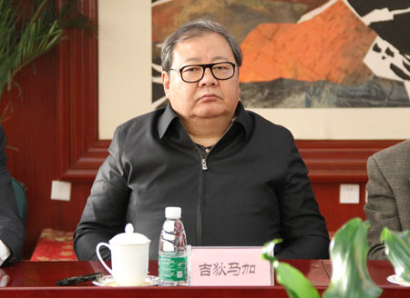
中国作家协会党组成员、书记处书记、副主席吉狄马加出席座谈会。
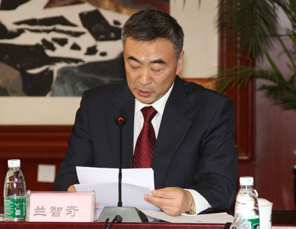
中国民族语文翻译局党委书记兰智奇主持会议。
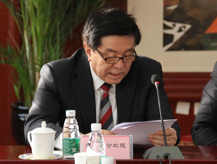
中国民族语文翻译局局长阿力木沙比提出席座谈会并发表讲话。
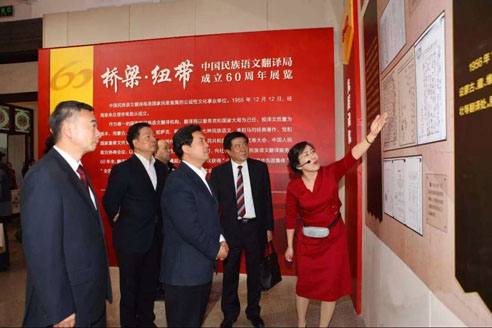
会后，全国政协副主席、国家民委主任王正伟参观中国民族语文翻译局成立60周年展览。